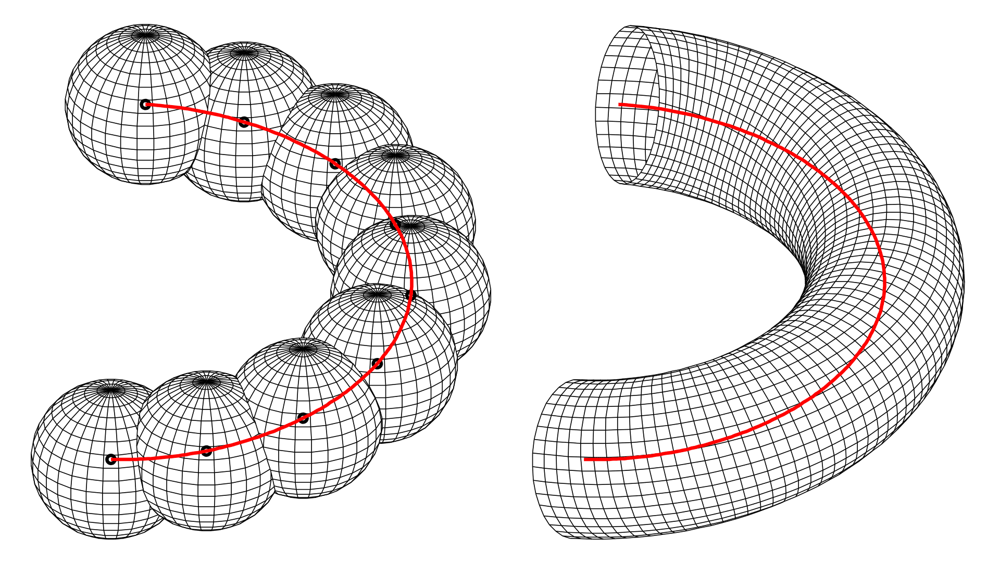

Ellipsoidal channel
Plotting a channel surface in MATLAB from two directrices used as the foci of ellipsoids
Revised 4 June 2026
In short. Given two space curves and a list of axis lengths, this builds the surface swept by an ellipsoid whose foci ride on the two curves, and plots it in MATLAB with cross-sections and shadows. It covers the geometry, three ways to estimate tangents from discrete points, and the code.
1Introduction
A channel is a surface formed as the envelope of a family of spheres, each with its centre on a space curve called the directrix. We will generalise this definition to ellipsoids. The directrix determines whether the channel surface is open or closed.

Three familiar surfaces are channels:
- a right circular cylinder, when the directrix is a straight line and the radii are constant;
- a torus, when the directrix is a circle and the radii are constant;
- a right circular cone, when the directrix is a straight line and the radii decrease to zero.
We aim to plot a channel using two directrices as the focal points of rotational ellipsoids. The two axes other than the focal axis are taken as equal, , and called the minor axis. We are given discrete position coordinates for the two directrices and the corresponding semi-minor axis lengths:
The data sits in a text file of seven rows. load() reads it, and each row becomes a variable:
impdata = load("curves.txt", "-ascii");
p = impdata(1,:); % first directrix
q = impdata(2,:);
r = impdata(3,:);
u = impdata(4,:); % second directrix
v = impdata(5,:);
w = impdata(6,:);
minor = impdata(7,:);
clear impdata;2The ellipses
An ellipse is the locus of points in a plane whose distances from two focal points have a constant sum. Let the foci be and , with their midpoint. For any point on the ellipse,
With the semi-major axis, the semi-minor axis and the distance from the centre to a focus,
The vector equation of the ellipse, about its centre and in its own plane, is
Prototype: the rest of the article is left out.